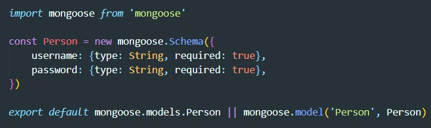
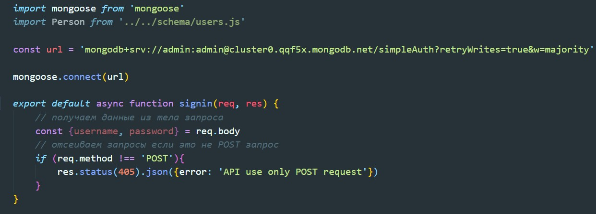

Предполагается что у нас есть атлас mongoDb, и развернут NextJS проект
Вот так выглядит схема коллекции
Тут как обычно в pages создаем папку api внутри нее помещаем файд auth.js. Путь до брекпоинта будет http://localhost:3000/api/auth
Создаем новый брекпоинт signup.js
Минимальная настройка брекпоинта выглядит так:
